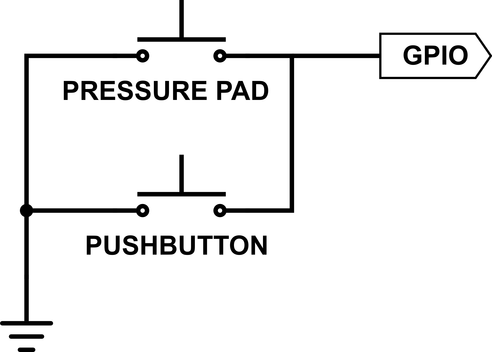
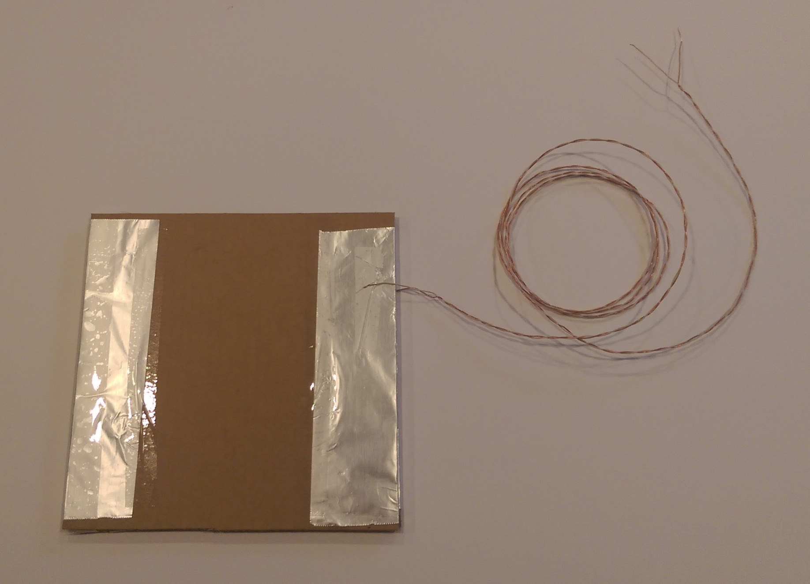

In this project, we use everyday objects from around the house to create a walkable piano.
We're going to veer off a little bit from our path of only building circuits on the breadboard and instead build one of our components from everyday household items. We're going to replicate what we did in the Better Piano project (in fact, we'll use the same code), but instead of using buttons on the breadboard to play the notes, we are creating our own walkable piano keys that will play sounds when you walk (or press) on them.
The only code changes that are necessary are if you want to add additional "keys" beyond the four that have already been wired.
Below are step-by-step instructions for building your piano keys and attaching them to the breadboard. This is what the final circuit on your breadboard should look like — notice that we'll be leaving the button wired in the circuit in addition to the homemade pressure pad (this is so you can use the button to test the breadboard wiring should you have trouble with your pressure pad):
Parts Required:
(2) 8" cardboard squares
(2) 1x8" cardboard strips
(2) 8x12" foil rectangles
(1) 6ft wire pair or (2) 6ft individual wires (stripped) — this can come from any wire you have around the house, including old speaker cable, an ethernet cable, etc.
Tape
Your pressure pad is complete.
Your homemade piano key should now play a note every time it is pressed...just like our buttons did in previous projects.
The software for any of the previous four button piano projects will work with this project.